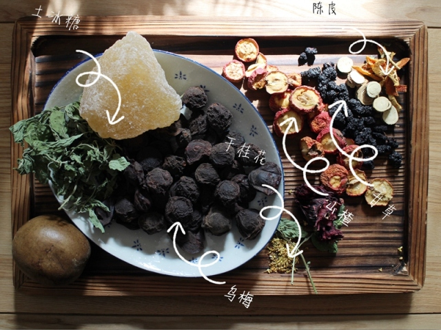
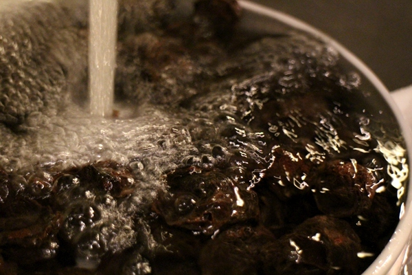
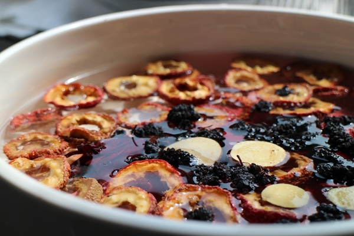
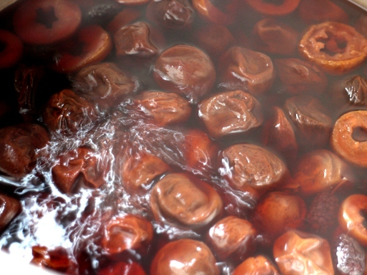
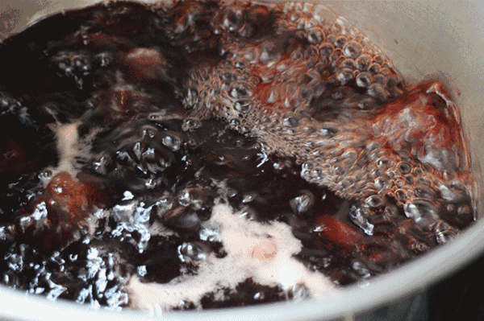
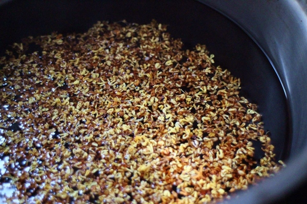
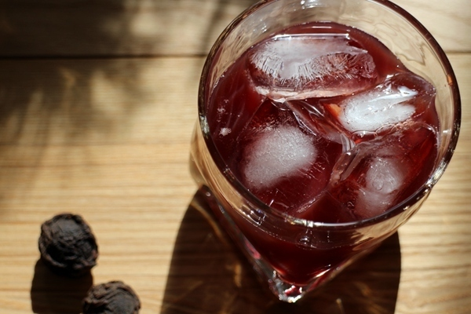
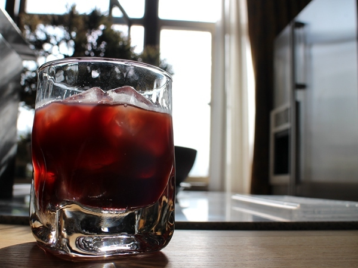

怎样熬一杯盛夏的酸梅汤？
文章来源：
http://baidu.com/
昨日上海最高气温，33℃
夏天来得如此猝不及防
又让人想起了以前，街角卖的那一杯酸梅汤
一口下去，浑身起鸡皮疙瘩的酸爽
上个世纪的文人写北平的食物时多会提到两样食物，冬天的糖葫芦，夏天的酸梅汤。那是北京还被称为北平的时候。那时的冬天似乎特别冷，街头开始有人卖冰糖葫芦，隆冬必有大雪，文人笔下的心也更冷，是那种冷到“冬天已经过去了，还留着冻疮的疤”。然而到了夏天，又是火一样的炙热，即便是看他们写一碗酸梅汤，似乎都能摸着喉结咽动处淌下的汗。
梁实秋写过信远斋的酸梅汤，每次去喝不是为了解渴，是为了解馋。梁老师写食，讲的道理通常很关键，比如做萝卜排骨汤就要排骨多，萝卜少，酸梅汤就得汁稠，冰糖多，但是没有具体的量，需要自己去把握。
反复尝试过几个夏天，
最后定了以下的用量，觉得最为适口。
食材准备
乌梅 160克（约40颗）| 山楂 45克| 冰糖 650克
陈皮 10克| 甘草 3克| 干桂花 一小把| 水 3000mL
罗汉果 1个| 薄荷叶 2克| 桑葚干 10克

乌梅、山楂、冰糖、陈皮、甘草、干桂花
TIPS：用料也并没有说非所有不可，
备齐图中指出的6样，也可以熬酸梅汤。
第一步
乌梅浸泡1小时，冲洗干净。
其余材料（除了冰糖以外）水洗一遍，去掉浮尘。

TIPS：乌梅浸泡1小时再冲洗，
可以去掉乌梅的土腥味。

其他材料过一下水，
不用长时间浸泡。
第二步
加入3000ml水，放入乌梅、山楂干、桑葚干、甘草、陈皮，煮开后转小火

陈皮的质量比较关键，建议用新会的陈皮。
新会陈皮存放的时间越久，味越醇。
但是年份越久的价格也高，大家看情况决定。
第三步
炖到剩余1/2水时加冰糖，薄荷叶

用冰糖、土冰糖为上选，用绵白糖效果就没那么好了，切记切记。
第四步
等到冰糖融化后关火，撒一把干桂花，
盖上盖子，凉了后放冰箱，冰镇到透心凉

熬这样一锅酸梅汤，大约一个多小时。

桂花要关火后再放，这样容易保持香气；
如果放的时间太早，桂花香气易散。

煮出来的汤清凉酸甜，冰镇后饮，通体舒泰。
马伯庸也写过酸梅汤，他说喝过最好的酸梅汤是去一个老字号传人的私宅吃饭，主人也姓马。
“这瓶黑色的酸梅汤，味道百转千回，在嘴里转悠着不肯散开，舌尖一弹，这才霎时爆开，洋洋扩散到全身。我要过那瓶子，仔细观察了一阵，发现这颜色不是黑，而是醇到极致，一晃动，居然还挂壁。”
但是末了人家也没告诉他配方，气得他把人家的酸梅汤都喝光光。觉得他满可爱的。

自己熬的话，其实用的料足，
味道就醇厚，就很好喝~
记得加冰块一起喝，带着灵魂的味道~